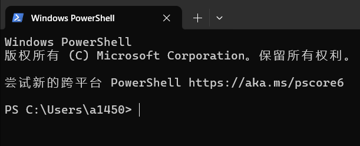
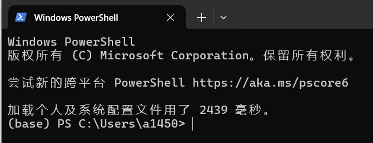
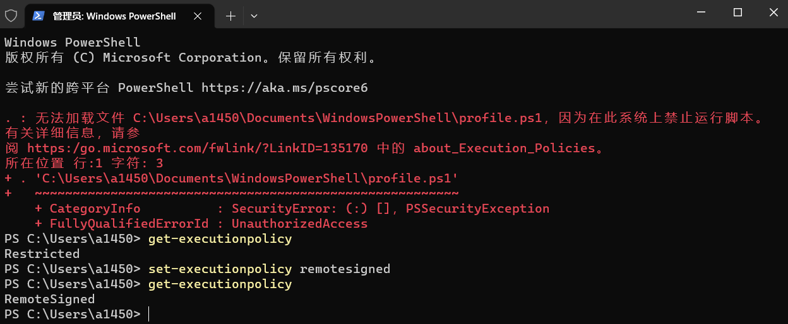
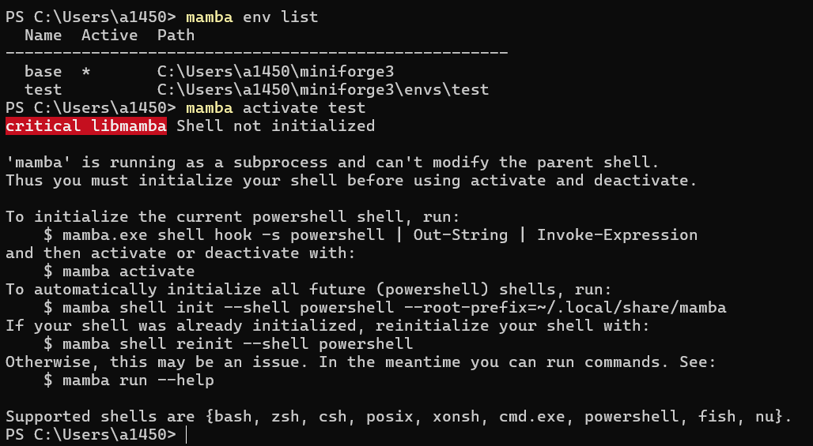

让 Windows 显示当前 Conda 环境名称和“conda init powershell”命令
让 Windows 显示 Conda 环境名称
Windows 下安装完成 Conda 后，打开PowerShell，并不能像 Linux 下那样显示当前的 Conda 环境名称（安装后默认是base）。

实现方式
为了实现显示当前环境的效果，在 Windows 的终端上需要执行：
conda init powershell执行后，重新打开PowerShell，就能像 Linux 下那样显示当前的 Conda 环境名称。

必要性⚠️
若未执行上述命令，使用 conda activate 命令后可能无法激活环境，如下，未能显示成功激活的 * 标识

注意事项⚠️
-
确保可执行 Conda 命令，即你的 Conda 程序路径已添加到 Windows 环境变量。
当下包含 Conda 的安装程序，在安装时勾选 "Add xxx to my PATH environment variable"即可，xxx 代表你的安装程序，我用的是miniforge，当然还有miniconda，Anaconda之类，可能存在些许差异。

-
确保可运行脚本
conda init powershell命令会修改 PowerShell 的启动配置文件 (profile.ps1)，使得每次打开 PowerShell 时自动初始化 Conda。Windows 默认情况是下是禁止运行脚本的，需使用如下命令修改策略set-executionpolicy remotesigned

实现原理
执行 conda init powershell 时，Conda 会进行以下操作：
- 配置文件的修改：Conda 会在 PowerShell 的配置文件（一般是
$PROFILE）里添加一段初始化代码。你可以通过在 PowerShell 中输入$PROFILE来查看该文件的路径。 - 钩子函数的注册：添加的初始化代码主要包含一个钩子函数，其作用是在 PowerShell 启动时，自动设置 Conda 的运行环境。
- 环境变量的动态设置：当你激活或者退出某个环境时，钩子函数会动态地修改系统的环境变量，确保各种命令能够正确运行。
配置文件示例
执行 conda init powershell 后，PowerShell 配置文件中会新增类似下面的代码：
#region conda initialize
# !! Contents within this block are managed by 'conda init' !!
If (Test-Path "C:\Users\你的用户名\miniforge3\Scripts\conda.exe") {
(& "C:\Users\你的用户名\miniforge3\Scripts\conda.exe" "shell.powershell" "hook") | Out-String | ?{$_} | Invoke-Expression
}
#endregion这段代码的作用是在 PowerShell 启动时，调用 Conda 的钩子函数，从而完成环境的初始化工作。
建议使用 Conda 管理，Manba用于安装库
让 Windows 显示 Manba 环境名称
Mamba 是一个快速、轻量级的包管理和环境管理工具，完全兼容 Conda。它的诞生主要是为了解决 Conda 在依赖解析时速度较慢的问题。
核心优势与功能：
极快的速度：Mamba 使用 C++ 编写，并采用了更快的依赖解析器（libsolv）和支持并行下载，在解决环境依赖和包安装速度上通常显著快于 Conda。与Conda命令高度兼容：你基本上可以把 Mamba 视为 Conda 的一个加速版替代品。大部分常用的 Conda 命令（例如create,install,remove）都可以直接将conda替换为mamba来使用。高效的依赖管理：能够快速处理复杂的包依赖关系，确保环境稳定性。虚拟环境管理：可以像 Conda 一样轻松创建、激活、管理和切换不同的 Python 虚拟环境，隔离项目依赖。
类似的，可以通过配置让 Windows 显示 Manba 环境名称，否则也可能无法使用 mamba activate 功能，如下

根据上述提示，可以通过命令
mamba shell init --shell powershell --root-prefix=~/.local/share/mamba解决上述问题